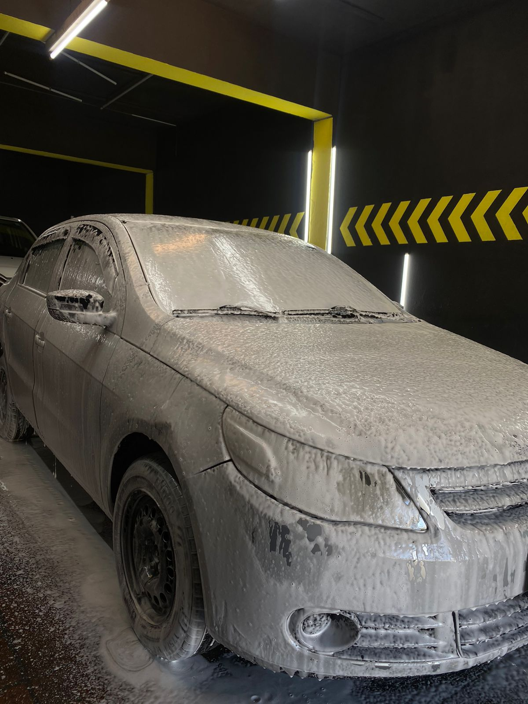
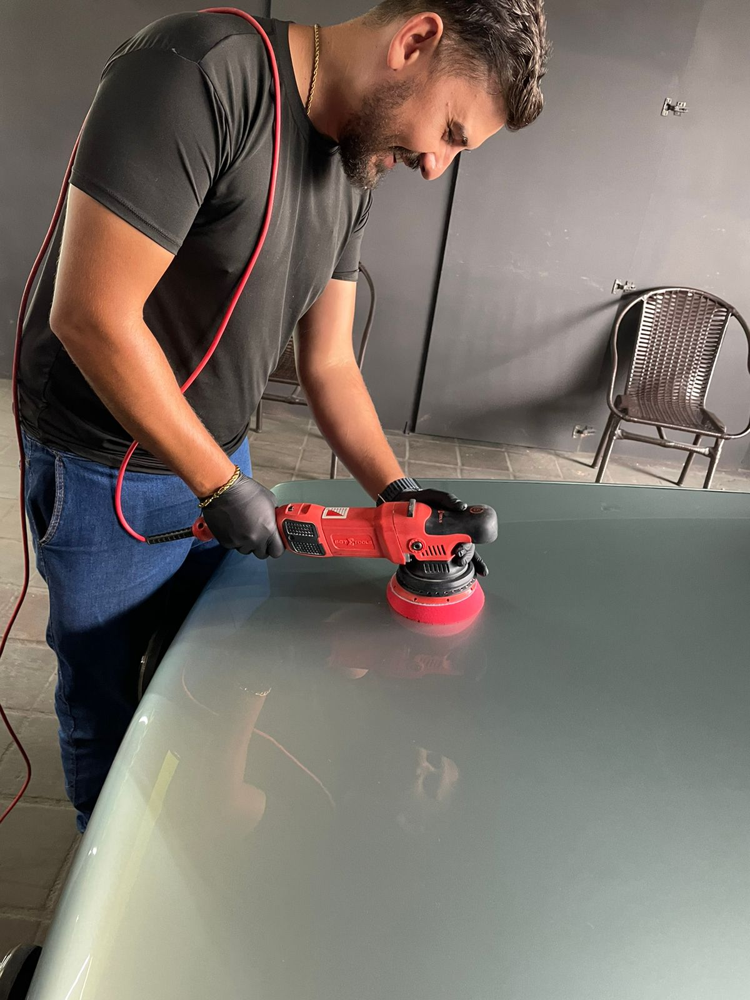

SERVIÇOS


Lavagem Detalhada:
A Lavagem Detalhada da Auto Delux, seu carro recebe um tratamento minucioso para remover
sujeiras difíceis e revitalizar sua aparência. Cada superfície é lavada à mão e enxaguada, com
aplicação de ceras e polidores para proteção e brilho duradouro, deixando seu carro com aspecto
de novo.

Polimento:
O Polimento da Auto Delux, seu carro recebe um tratamento para remover pequenas imperfeições e
revitalizar o brilho da pintura. Utilizando produtos e técnicas específicas, o polimento é
realizado de forma cuidadosa para não danificar a pintura. O resultado é uma superfície mais
lisa e brilhante, que ressalta a beleza do veículo.
Vitrificação de Pintura:
Na Vitrificação de Pintura da Auto Delux, seu carro recebe um revestimento de proteção para a
pintura. Esse processo envolve a aplicação de um produto cerâmico que cria uma camada
transparente sobre a pintura, protegendo-a contra riscos, raios UV e sujeira. Além da proteção,
a vitrificação de pintura também proporciona um brilho intenso e duradouro, mantendo seu carro
com aspecto de novo por mais tempo.
Remoção de Chuva Ácida:
A Remoção de Chuva Ácida é um serviço especializado para corrigir os danos causados pela
exposição a esse tipo de precipitação. A chuva ácida pode danificar a pintura do veículo,
causando manchas e corrosão. O serviço inclui a limpeza profunda da superfície afetada, seguida
pela aplicação de produtos específicos para remover as manchas e restaurar o brilho da pintura.
Esse processo ajuda a proteger a pintura contra danos futuros e mantém a aparência do veículo.
Nossos serviços:
- Polimento: Remova pequenas imperfeições e revitalize o brilho da pintura do seu veículo de forma cuidadosa e precisa.
- Lavagem Detalhada: Uma limpeza minuciosa para remover sujeiras difíceis e revitalizar a aparência do seu carro, deixando-o com aspecto de novo.
- Lavagem Simples: Cuidado e atenção aos detalhes na limpeza manual do seu veículo, garantindo sua total remoção e deixando-o brilhante.
- Vitrificação de Pintura: Proteja a pintura do seu carro com um revestimento cerâmico que oferece não apenas proteção contra danos, mas também um brilho intenso e duradouro.
- Remoção de Chuva Ácida: Corrija os danos causados pela exposição a chuva ácida, mantendo a pintura do seu veículo impecável.
- Higienização Interna e Externa: Um serviço completo que inclui a limpeza profunda do interior e exterior do seu veículo, garantindo sua total limpeza e frescor.
- Descontaminação de Pintura: Remova contaminantes que podem danificar a pintura do seu carro, deixando-a limpa, lisa e protegida.
- Aplicação de Selantes de Proteção: Mantenha a pintura do seu veículo protegida contra os efeitos do tempo e do ambiente, com um selante que oferece proteção duradoura e brilho intenso.
Na Auto Delux, cada serviço é executado com o mais alto padrão de qualidade e atenção aos detalhes, garantindo que seu carro receba o cuidado que merece. Venha viver essa sensação com a Auto Delux e descubra por que somos a melhor escolha para o seu veículo!